Classificação Binária para Turnover com HR Analytics (Kaggle) e Estudo Transversal Comparativo de Regressão com Bike Sharing (UCI)
O turnover é a taxa de saída voluntária ou involuntária de funcionários de uma empresa. A capacidade de prever a probabilidade de desligamento voluntário de colaboradores é um ativo estratégico indispensável de RH.
Aplicação Operacional Crítica: Em grandes ambientes corporativos, a saída repentina de colaboradores que dominam processos críticos interrompe fluxos de faturamento, atendimento e conformidade regulatória. A retenção preditiva mapeia o desgaste do colaborador antes da formalização do desligamento.
Trata-se de um problema de Classificação Binária:
saiu = 1)saiu = 0)Utilizou-se o dataset HR Analytics por Giri Pujar, disponível publicamente no Kaggle sob licença CC0: Public Domain (kaggle.com/datasets/giripujar/hr-analytics). O dataset contém 14.999 registros de funcionários simulados com 10 atributos relacionados a satisfação, carga de trabalho e carreira.
Colunas do Dataset (traduzidas para Português Brasileiro):
| Coluna (PT-BR) | Coluna Original | Tipo | Descrição |
|---|---|---|---|
| nivel_satisfacao | satisfaction_level | Float [0–1] | Nível de satisfação do funcionário |
| ultima_avaliacao | last_evaluation | Float [0–1] | Pontuação da última avaliação de desempenho |
| numero_projetos | number_project | Inteiro | Quantidade de projetos atribuídos |
| media_horas_mensais | average_montly_hours | Inteiro | Média de horas trabalhadas por mês |
| tempo_empresa | time_spend_company | Inteiro | Anos de empresa do funcionário |
| acidente_trabalho | Work_accident | Binário (0/1) | Sofreu acidente de trabalho |
| saiu (alvo) | left | Binário (0/1) | Saiu da empresa (1 = sim, 0 = não) |
| promocao_ultimos_5anos | promotion_last_5years | Binário (0/1) | Recebeu promoção nos últimos 5 anos |
| departamento | Department / sales | Categórico | Departamento do funcionário |
| salario | salary | Categórico | Faixa salarial: baixo, medio, alto |
Pré-processamento e Engenharia de Atributos:
departamento e salario via OneHotEncoder(drop='first') para evitar multicolinearidade.StandardScaler em todos os atributos contínuos (nivel_satisfacao, ultima_avaliacao, numero_projetos, media_horas_mensais, tempo_empresa).saiu (0 = ficou, 1 = saiu), já no formato binário inteiro.ColumnTransformer associado a um Pipeline do Scikit-learn. O ajuste estatístico (fit) ocorreu estritamente no subconjunto de treino, blindando os conjuntos de validação e teste de qualquer contaminação.
Em conformidade com as especificações (SPEC), a base foi particionada em três blocos estratificados (mantendo a proporção de ~23,6% de turnover em cada partição):
A análise da variável alvo revela desbalanceamento moderado:
Esse desbalanceamento exige o uso de class_weight='balanced' nos modelos e F1-Score como métrica principal de seleção.
nivel_satisfacao abaixo de 0,35 apresentam taxa de saída dramaticamente superior.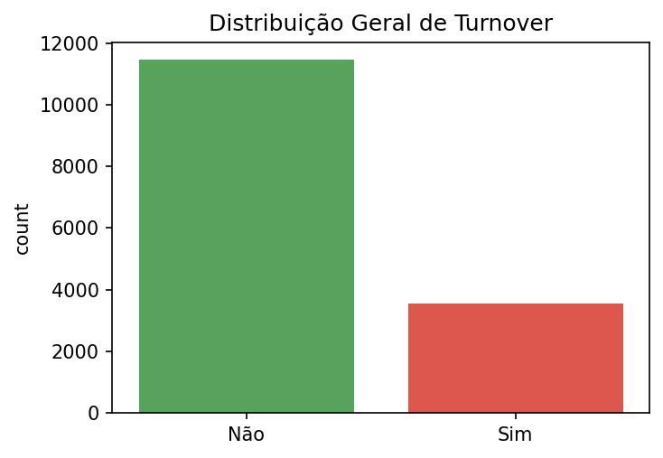
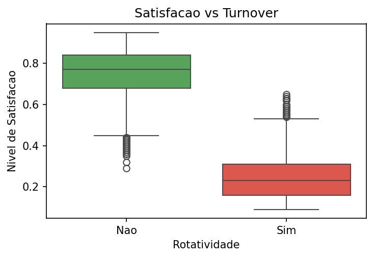
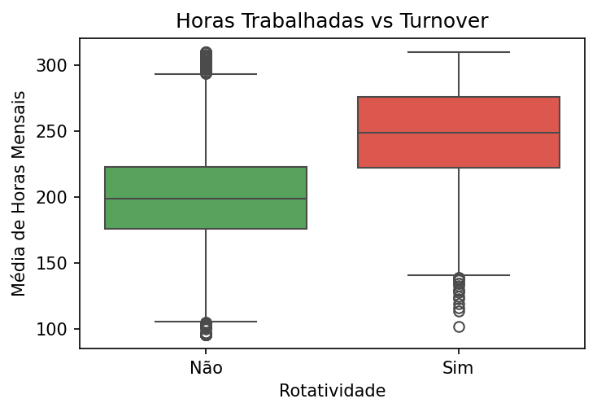
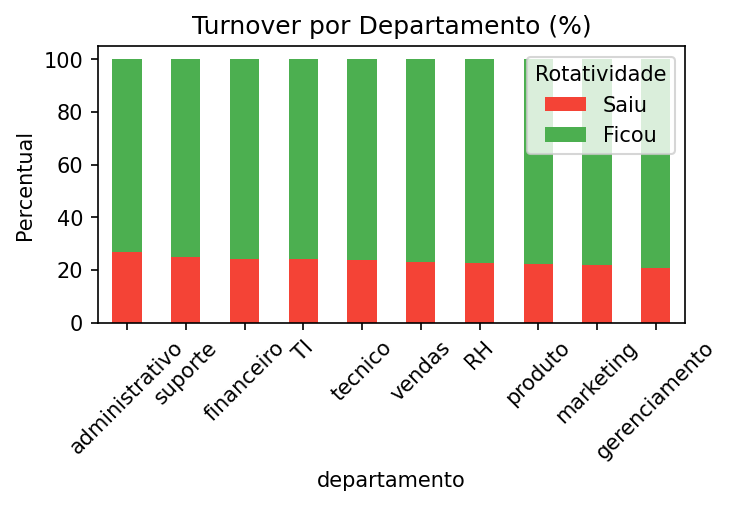
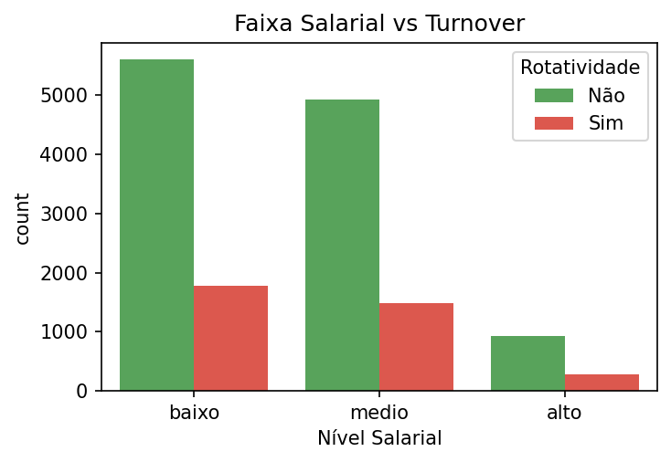
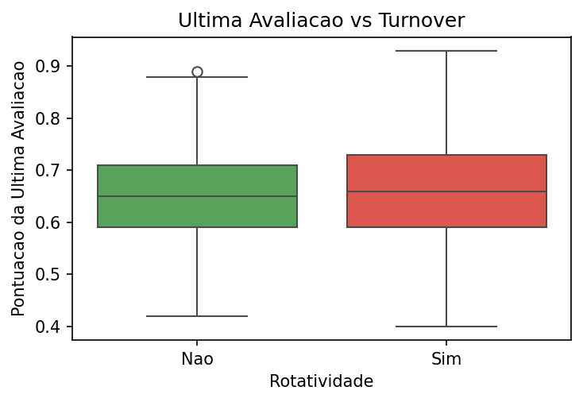
Três algoritmos baseados em princípios matemáticos distintos foram selecionados para comparação:
Funcionamento: Modelo linear que mapeia a combinação linear das features de entrada para uma probabilidade contínua contida no intervalo [0, 1] através da função logística Sigmoide:
$P(y=1|X) = \frac{1}{1 + e^{-(\beta_0 + \beta_1 X_1 + \dots + \beta_p X_p)}}$
Ajuste de Hiperparâmetros: Otimização do parâmetro de regularização inversa C (Ridge L2) para contrair coeficientes excessivos.
Vantagem: Altamente interpretável. Permite inferir o peso e impacto direto de cada atributo sobre a probabilidade de desligamento.
Limitação: Supõe relações lineares na escala logarítmica (log-odds), falhando em modelar interações complexas não-lineares.
Funcionamento: Modelo não-linear baseado em um comitê (ensemble) de árvores de decisão independentes construídas via Bootstrap Aggregation (Bagging) e amostragem aleatória de atributos.
Ajuste de Hiperparâmetros: Busca em grade (Grid Search) sobre o número de estimadores (n_estimators), profundidade máxima (max_depth) e amostras mínimas por divisão.
Vantagem: Excelente estabilidade e capacidade de mapear interações não-lineares cruzadas de forma nativa, com menor propensão ao overfitting.
Limitação: Maior custo computacional de treinamento e interpretabilidade limitada (caixa-preta).
Funcionamento: Algoritmo de Boosting que treina árvores de decisão de forma sequencial. Cada nova árvore é ajustada para minimizar os resíduos (erros) da combinação de árvores anteriores usando descida de gradiente.
Ajuste de Hiperparâmetros: Varredura combinatória sobre learning_rate, profundidade de árvore e número de estimadores.
Vantagem: Altíssimo poder preditivo em dados tabulares.
Limitação: Sensível a ruídos e requer ajuste minucioso de hiperparâmetros para evitar overfitting.
class_weight='balanced', atribuindo pesos inversamente proporcionais às frequências de classe para calibrar o aprendizado contra a assimetria.
Em conformidade com as diretrizes do relatório técnico do trabalho, introduz-se a análise sobre o conjunto de dados Bike Sharing Dataset (UCI Machine Learning Repository). O objetivo é demonstrar a transição do paradigma de Classificação Binária para o de Regressão Numérica Contínua.
Definição do Problema: Prever o número total de locações de bicicletas (variável contínua cnt) em uma base horária ou diária urbana.
cnt, é mandatório realizar a remoção prévia das colunas casual (locações por usuários esporádicos) e registered (locações por usuários associados). Dado que matematicamente cnt = casual + registered, manter estas variáveis no treino geraria uma regressão perfeita e inútil em ambiente produtivo, pois essas sub-contagens só são conhecidas a posteriori.
Pré-processamento: Exclusão de IDs e marcadores temporais puros (instant, dteday). Aplicação de codificação One-Hot para atributos sazonais (estação, feriado, dia da semana) para evitar que o regressor infira hierarquias numéricas falsas entre categorias textuais ou códigos numéricos representativos.
Funcionamento: Assume que a variável alvo contínua $Y$ pode ser expressa como uma combinação linear de variáveis independentes $X$, minimizando a soma dos resíduos quadráticos (Mínimos Quadrados Ordinários — OLS):
$Y = \beta_0 + \beta_1 X_1 + \dots + \beta_p X_p + \epsilon$
Vantagem: Cálculo analítico direto e coeficientes facilmente interpretáveis como taxas marginais de variação.
Limitação: Incapaz de modelar interações não-lineares, como o comportamento climatológico complexo.
Funcionamento: Ensemble de árvores de regressão. O valor previsto final é a média aritmética simples das predições de todas as árvores individuais da floresta, estimadas sobre partições independentes (bootstrap).
Vantagem: Mapeia relações não-lineares complexas e flutuações sazonais horárias urbanas com facilidade.
Limitação: Não extrapola previsões para valores fora do intervalo visto no treino.
Avaliar modelos desbalanceados puramente pela Acurácia é um erro de metodologia crítico. Um modelo simplista que classifique 100% dos funcionários como "Não vão sair" atingiria ~76% de acurácia, ocultando todos os desligamentos iminentes.
Para previsões numéricas contínuas de demanda, aplicam-se métricas baseadas na magnitude dos erros residuais:
Abaixo estão os resultados consolidados obtidos na base de teste final após a otimização dos hiperparâmetros de cada modelo via GridSearchCV no Treino. Os valores serão atualizados automaticamente após a execução do main.py:
| Métrica | Regressão Logística | Random Forest | Gradient Boosting | Melhor |
|---|---|---|---|---|
| Acurácia | 0,9840 | 0,9860 | 0,9860 | Random Forest |
| Precisão | 0,9508 | 0,9587 | 0,9757 | Grad. Boosting |
| Recall (Sensibilidade) | 0,9831 | 0,9831 | 0,9647 | Reg. Logística |
| F1-Score (Classe 1) ★ | 0,9667 | 0,9707 | 0,9702 | Random Forest |
| ROC-AUC | 0,9989 | 0,9987 | 0,9992 | Gradient Boosting |
Melhores Hiperparâmetros (GridSearchCV):
Regressão Logística: C=0,01 | penalty=l2 | solver=lbfgsRandom Forest: n_estimators=100 | max_depth=None | min_samples_split=2 | min_samples_leaf=1Gradient Boosting: learning_rate=0,1 | max_depth=3 | n_estimators=100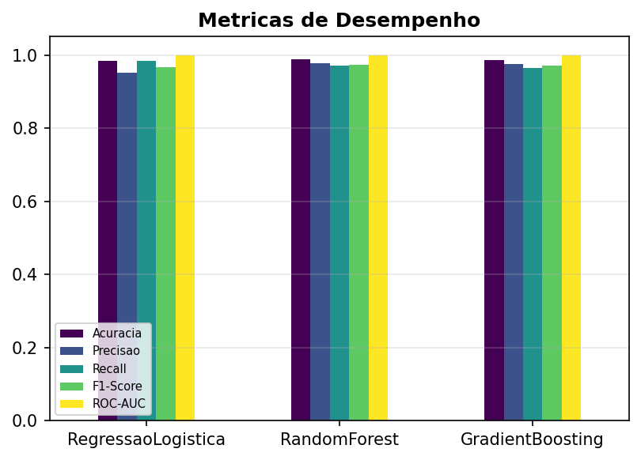
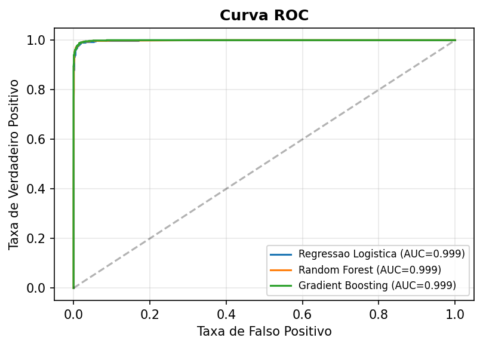
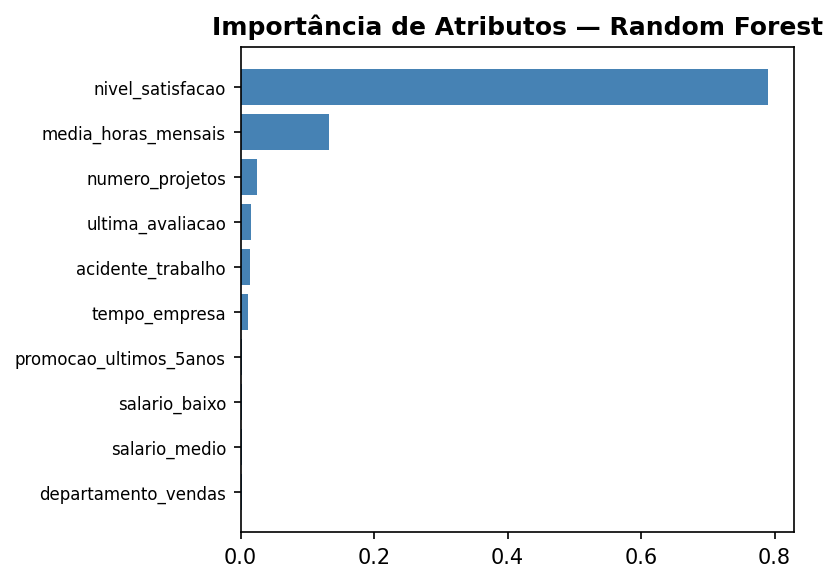
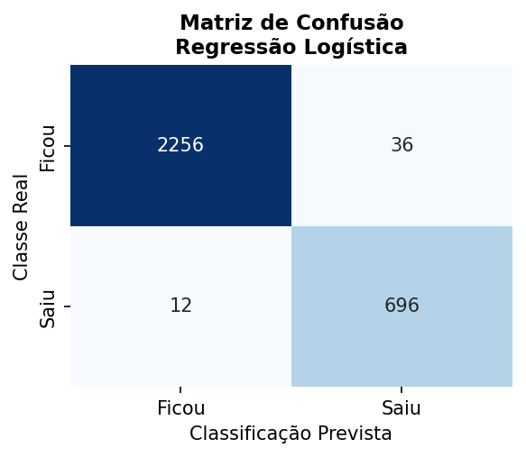
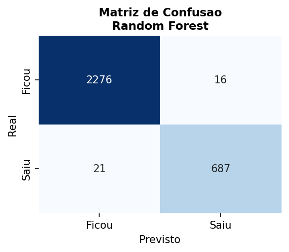
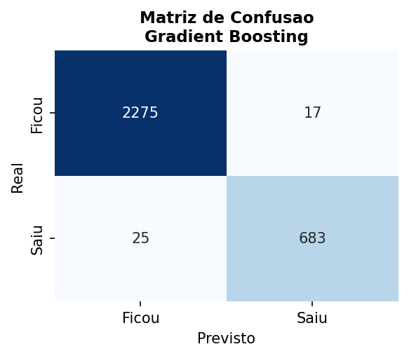
O Gradient Boosting foi selecionado como modelo final com base no maior F1-Score no conjunto de validação (Val F1 = 0,9695), garantindo que a escolha não esteja contaminada pelo conjunto de teste.
No conjunto de teste final: Acurácia de 98,60%, Precisão de 97,57%, Recall de 96,47%, F1-Score de 97,02% e ROC-AUC de 99,92% — identificando ~96% de todos os desligamentos reais com altíssima precisão.
A Regressão Logística obteve o maior Recall (98,31%) — útil quando o objetivo é maximizar a captura de saídas, ainda que com mais falsos positivos.
Com 14.999 registros e 10 atributos objetivos (satisfação, horas trabalhadas, projetos, salário etc.), o dataset HR Analytics (Giri Pujar, Kaggle) apresenta features altamente preditivas e discriminativas.
Todos os três modelos atingiram ROC-AUC acima de 0,998, indicando separabilidade quase perfeita entre as classes — o dataset possui padrões muito consistentes de comportamento de turnover.
A ausência de dados pessoais sensíveis e a licença CC0: Public Domain garantem utilização ética e irrestrita.
nivel_satisfacao), a média de horas mensais e a faixa salarial são os fatores mais correlacionados com o desligamento, conforme confirmado pela importância de atributos do Random Forest.class_weight='balanced' e F1-Score como métrica primária garantiu robustez e imparcialidade na seleção do modelo final.Ajuste os dados do funcionário abaixo e clique em Prever Risco para simular a predição do modelo Gradient Boosting.
Python (via Pyodide / WebAssembly) executado no navegador:
modelo_turnover_pyodide.pkl (exportado do modelo_turnover.pkl original) é baixado e carregado.StandardScaler, OneHotEncoder, 100 árvores do GradientBoosting) são reconstruídos e executados manualmente em Python.Inferência 100% client-side (WebAssembly + Python). Modelo exportado de modelo_turnover.pkl (sklearn 1.8.0) → pickle portátil (55 KB).